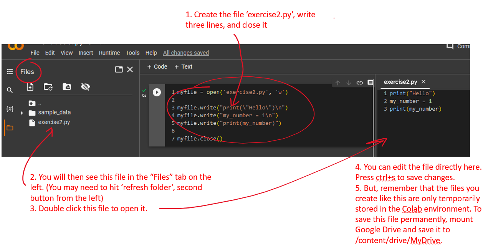

Scripts
Contents
Scripts#
Exercises: scripts#
Exercise 9.1: Shell commands for Google Colab
So far we have been coding with Python in Jupyter Notebooks. Another way of coding with Python is to write and execute scripts. Python scripts end with the extension .py, and can be executed from the OS shell/command line. On Google Colab, you can invoke shell commands (mkdir, cp, ls, mv, and so on) by prefixing the command with ! .
Use mkdir to make a new directory:
!mkdir my_CFB_files
Use cp to copy files and directories:
!cp -rp /content/gdrive/MyDrive/CFB_files /content/my_CFB_files
Use ls to list directory contents:
!ls /content/my_CFB_files/CFB_files
Remember that the Google Colab /content folder is temporary and will be cleared in a few hours. To save files permanently, mount Google Drive and place the files in /content/gdrive/MyDrive.
Exercise 9.2: Comparing the Jupyter notebook with running scripts from the command line
Open a new Jupyter Notebook. Copy the following code into a cell and execute the cell:
print("Hello")
my_number = 1
my_number
Questions:
Describe the exact output.
Which of the three lines in the above code produce output?
Is this output formatted in the same way?
Now create a python script by using the following code:
myfile = open('exercise2.py', 'w')
myfile.write("print(\"Hello\")\n")
myfile.write("my_number = 1\n")
myfile.write("print(my_number)")
myfile.close()
Note that you can edit .py files directly in the Google Colab environment.

Now, in a new cell, run the script using the shell command python:
!python exercise2.py
Questions:
Is the output of the script printed to the terminal window exactly the same as the output printed to screen when executing the cell in a Jupyter notebook?
How does a Jupyter-notebook differ from a script in terms of the output, the information that is written to the screen?
Exercise 9.3: Permanence of Python variables in memory
Copy the following code to a cell in a Jupyter notebook and execute the cell.
my_number = 42
Copy the following code to a new cell below the previous one in the same Jupyter notebook, and execute the cell:
print('my_number is', my_number)
Question:
What is the output of the second cell in the Jupyter notebook?
Next, create a Python script called exercise3a.py with exactly the same code as the first cell (i.e. my_number = 42).
Create a second Python script called exercise3b.py with exactly the same code as the second cell (print('my_number is', my_number)).
Now execute the first script and the second script in that order:
!python exercise3a.py
!python exercise3b.py
Questions:
Does executing the first script produce an error message? If not, what is the output printed to the screen? If yes, why?
Does executing the second script produce an error message? If not, what is the output printed to the screen? If yes, why?
What is the state of the Python memory when it starts to execute a Python script?
Modify
exercise3b.py, such that when you execute it, it produces the following output:my_number is 35
Using script with variable input#
Create a python script called module_using_sys.py with the following contents:
import sys
print('The command line arguments are:')
for i in sys.argv:
print(i)
Let’s run this script from the shell.
!python module_using_sys.py we are arguments
The command line arguments are:
module_using_sys.py
we
are
arguments
The argv variable in the sys module contains everything that you have typed on the command line. The sys.argv variable is a list of strings. Specifically, the sys.argv contains the list of command line arguments.
Here, when we execute python module_using_sys.py we are arguments, we run the module
module_using_sys.py with the python command and the other things that follow are arguments
passed to the script. Python stores the command line arguments in the sys.argv variable for us
to use.
Remember, the name of the script running is always the first argument in the sys.argv list. So,
in this case we will have 'module_using_sys.py' as sys.argv[0], 'we' as sys.argv[1],
'are' as sys.argv[2] and 'arguments' as sys.argv[3].
Exercises using sys.argv#
Exercise 9.4: Reading the command line arguments
Make a script called nuc_arg.py that prints the nucleotide content of a sequence that you give as argument on the command line.
For example, this command:
!python nuc_arg.py TGACTCA
should print the following output:
2 2 1 2
Exercise 9.5: FASTA statistics
Write a script called nuc_fasta.py.
This script should accept the name of a FASTA file as argument, read the FASTA sequences in that file and print the nucleotide content of all the sequences.
The script should print a header line, followed by the FASTA id (the sequence name) of every sequence followed by the nucleotide content of that sequence. The output should be tab-separated. The nucleotide content should be specified as a fraction of the sequence length, with two digits in the order A, C, G and T. When you run the script nuc_fasta.py on the input file /content/gdrive/MyDrive/CFB_files/sequences.fa the output should exactly mach the following:
name A C G T
chr14:89352059-89352259 0.31 0.28 0.20 0.22
chr5:74264624-74264824 0.34 0.20 0.20 0.26
chr2:132500203-132500403 0.23 0.12 0.21 0.43
chr6:30630663-30630863 0.28 0.23 0.27 0.22
chr15_KI270905v1_alt:1999423-1999623 0.35 0.22 0.15 0.28
Using available modules: argparse#
The Python standard library, which is included with every Python version, contains a lot of useful modules (see here) In addition, there are many third-party modules available. Some of these we will use in this course, such as pandas for data analysis and matplotlib for making figures. However, it is not possible to exhaustively cover all these modules in this course. Therefore, it is very useful to be able to search for modules and for examples and tutorials on how to use tese modules. With the subjects covered so far, you should have enough understanding of basic Python principles.
Let’s take an example, the argparse module.
This is a very useful module for scripts that take (a lot of) command-line arguments. Some examples on how to use this module:
https://docs.python.org/3/howto/argparse.html
Have a look, Google it, try it out! We will use the argparse module in our final assignment for today.
Exercises: putting it all together#
Exercise 9.6: motif scanning
Write a Python script that scans a FASTA file with a IUPAC consensus sequence.
As an optional argument to the script, a use should be able to specify a number of mismatches.
It should be possible to specify these arguments on the command line, use the argparse module.
As output, the script should print, for every match, the ID of the sequence and the position of the match within the sequence.
Take care of the following:
Comment your code
Use functions
Follow the style guide
Test your code
Start small. It is better to have a working script that has limited functionality but works well, than a script that tries to do everything and fails.
Test data
Two examples of consensus sequences and FASTA files (for c-Myc and STAT3 from Chen et al. 2008) are located in /content/gdrive/MyDrive/CFB_files.
consensus.txtc-Myc.faSTAT3.fa
Extension (optional!)
Implement the ‘Match’ algorithm from Kel et al. 2003 to scan for matches to a positional weight matrix.
The log function can be imported from the math module. See the definition of this function here.